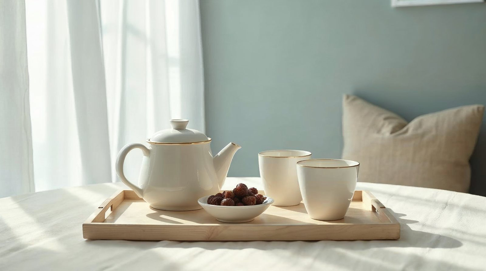
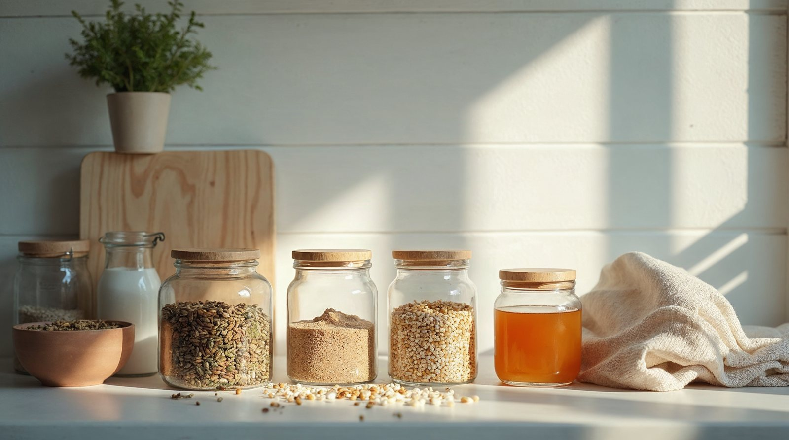
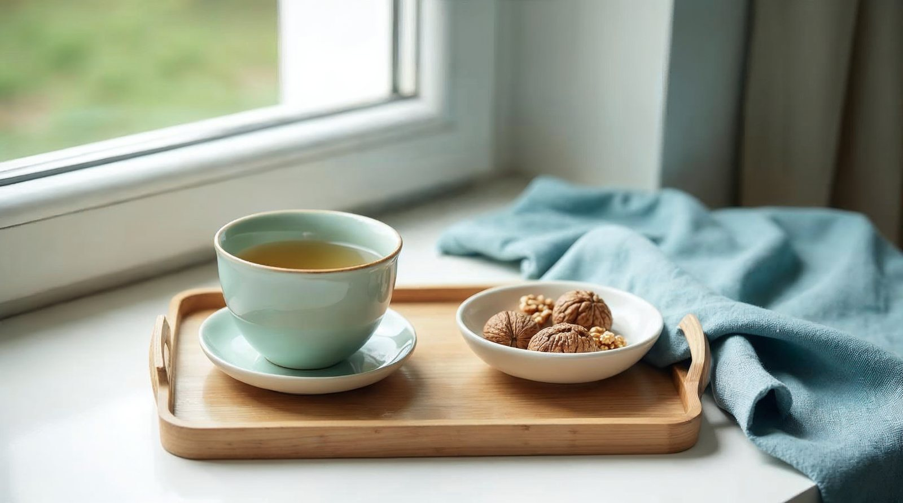
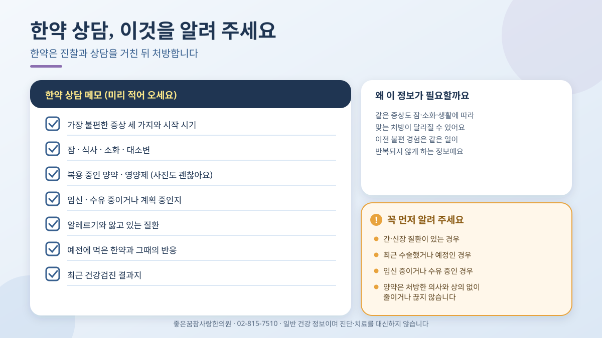

이종호 한의사 감수좋은꿈참사랑한의원 대표원장 (한의사 면허번호 19769)발행 2026-11-23 · 수정 2026-11-26
이 글의 차례
- 왜 이런 정보가 처방을 정하는 데 필요할까요
- 증상은 어떻게 설명하면 좋을까요?
- 잠·소화·대소변·땀까지 왜 물어볼까요?
- 자주 하는 오해
- 예를 들면 이런 경우입니다
- 약과 영양제는 어떻게 챙겨 오면 좋을까요?
- 예전에 먹은 한약은 어떻게 알려 주면 될까요?
- 임신 중이거나 계획 중이라면 무엇을 먼저 말할까요?
- 말하기 어려운 이야기도 괜찮을까요?
- 먼저 이렇게 여쭙니다
- 스스로 점검해 보세요
- 일상에서 먼저 해 볼 수 있는 것
- 한의원에서 함께 살필 수 있는 경우
- 보약을 원할 때도 같은 걸 물어보나요?
- 체중 관리 상담이라면 무엇을 더 알려 주면 좋을까요?
- 상담 전 기록은 어떻게 적으면 될까요?
- 가족이 함께 와도 될까요?
- 한약을 드시는 동안은 무엇을 지키면 될까요?
- 상담받는 날은 어떻게 오면 좋을까요?
- 한약을 지은 뒤 다시 오시면 무엇을 여쭙나요?
- 처음 오시면 이렇게 진행합니다
- 얼마나 지켜보고, 언제 상담하면 좋을까요
- 이렇게 기록해 오시면 상담이 쉬워집니다
- 이런 증상은 먼저 확인이 필요합니다
- 함께 읽으면 좋은 글
한약 상담 때는 불편한 증상과 시작 시기, 잠·식사·소화·대소변 같은 생활, 복용 중인 약과 영양제, 임신·수유 여부, 알레르기와 앓는 질환, 그리고 예전에 한약을 먹었을 때의 반응을 알려 주시면 좋습니다. 한약은 진찰과 상담을 거친 뒤 처방하기 때문에, 이 정보가 처방을 정하는 바탕이 됩니다.
무엇을 말해야 할지 몰라 망설이신다면 아래 항목을 미리 정리해 오시면 진료실에서 이야기가 훨씬 수월해집니다.
진료실에서 이런 말씀 자주 들어요. "원장님, 이런 것까지 말해도 돼요?" 네, 다 말씀해 주세요. 그러니까 사실은 사소해 보이는 이야기 하나가 처방을 정하는 실마리가 되는 경우가 많거든요.
왜 이런 정보가 처방을 정하는 데 필요할까요
- 같은 증상이라도 잠, 소화, 체질, 생활에 따라 맞는 처방이 달라질 수 있습니다.
- 간이나 신장 질환이 있으면 약을 처리하는 몸의 부담을 함께 고려해야 합니다.
- 임신·수유 중이거나 수술을 앞두고 있다면 처방과 복용 시기를 달리 정해야 할 수 있습니다.
- 이전에 한약을 먹고 불편했던 경험은 같은 일이 반복되지 않게 하는 중요한 정보입니다.
증상은 어떻게 설명하면 좋을까요?
"그냥 피곤해요", "여기저기 안 좋아요"라고 하셔도 괜찮아요. 처음엔 다들 그래요. 거기서부터 제가 하나씩 여쭤볼게요. 그래도 아래 네 가지를 미리 떠올려 오시면 이야기가 훨씬 빨리 풀려요.
- 언제부터: 몇 주 전인지, 몇 년째인지, 계기가 있었는지
- 언제 더한지: 아침인지 저녁인지, 식사 뒤인지, 생리 전후인지, 추운 날인지
- 무엇을 하면 덜한지: 쉬면, 따뜻하게 하면, 먹고 나면, 자고 나면
- 일상에 얼마나 걸리는지: 일이나 잠을 방해하는 정도인지, 신경 쓰이는 정도인지
예를 들어 같은 피로라도 아침에 일어나기 힘든 피로와 오후 서너 시에 갑자기 몰려오는 피로는 두 개가 다른 얘기예요. 이런 차이가 처방의 방향을 바꾸기도 해요.
증상이 여러 개라면 가장 불편한 것부터 순서대로 말씀해 주세요. 나머지는 제가 이어서 여쭤볼게요.
잠·소화·대소변·땀까지 왜 물어볼까요?
어깨가 불편해서 오셨는데 소화는 어떠냐, 대변은 어떠냐 물으면 의아해하시는 분도 있어요. 저는 불편한 곳 하나만이 아니라 그 불편이 생긴 몸 전체를 보려고 하는 거예요.
- 잠: 잠들기 어려운지, 자다가 자주 깨는지, 꿈이 많은지
- 소화: 입맛, 더부룩함, 속쓰림, 트림
- 대소변: 변의 굳기와 횟수, 밤에 소변 때문에 깨는지
- 땀과 추위·더위: 손발이 찬지, 땀이 많은지, 더위를 타는지
- 마음: 요즘 긴장이 많은지, 걱정으로 잠을 설치는지
이 다섯 가지는 몸의 리듬을 들여다보는 창문 같은 거예요. 맥을 짚으면서 이 이야기를 함께 들으면, 같은 병명이라도 사람마다 왜 처방이 달라지는지 보이기 시작해요.
자주 하는 오해
- 사소한 증상은 말하지 않아도 된다고 여기기 쉽지만, 잠이나 대소변, 땀처럼 사소해 보이는 것이 처방을 정하는 데 중요한 단서가 됩니다.
- 영양제나 건강식품은 약이 아니니 말하지 않아도 된다고 생각하기 쉽지만, 함께 드시는 것을 모두 알려 주셔야 겹치는 성분을 확인할 수 있습니다.
- 예전에 한약이 안 맞았던 기억은 말하기 어렵다고 여기기 쉽지만, 같은 일이 반복되지 않게 하는 가장 중요한 정보입니다.
- 한약 상담을 받으면 꼭 한약을 지어야 한다고 생각하기 쉽지만, 진찰 결과 침이나 생활 요령이 더 맞다고 안내하는 경우도 있습니다.
예를 들면 이런 경우입니다
- 예를 들어 피로 때문에 상담받으시는 분이 최근 건강검진 결과지를 가져오시면, 빈혈이나 갑상선 수치처럼 함께 볼 것을 바로 확인할 수 있습니다.
- 예를 들어 임신을 준비 중인 분이라면, 계획 시기와 복용 중인 영양제를 먼저 여쭙고 처방과 복용 시기를 함께 정합니다.
- 예를 들어 예전에 한약을 먹고 설사를 했던 분이라면, 그때의 처방과 시기를 여쭙고 소화 상태를 더 살펴 처방을 정합니다.
약과 영양제는 어떻게 챙겨 오면 좋을까요?
약 이름을 다 외워 오실 필요는 없어요. 약 봉투나 처방전을 사진으로 찍어 오시면 충분해요.
- 병원 처방약: 약 봉투나 처방전 사진, 언제부터 드셨는지
- 약국에서 사 드시는 약: 진통제, 소화제, 수면 보조제처럼 가끔 드시는 것도 포함
- 영양제·건강식품: 통의 성분표 사진, 홍삼이나 즙처럼 매일 드시는 것
- 최근에 끊었거나 바꾼 약
드시던 약은 처방한 의사와 상의 없이 줄이거나 끊지 않습니다. 저는 지금 드시는 것을 모두 확인한 뒤에 한약을 함께 드셔도 될지, 시간 간격을 어떻게 둘지 정해요.
예전에 먹은 한약은 어떻게 알려 주면 될까요?
몇 년 전에 무슨 한약을 먹었는지 기억이 잘 안 나는 게 당연해요. 정확한 처방 이름보다 그때 몸이 어땠는지가 더 쓸모 있을 때가 많아요.
- 무엇 때문에 드셨는지(피로, 소화, 생리, 체중 관리 등)
- 드시는 동안 편했던 점과 불편했던 점
- 속이 불편했거나 대변이 묽어졌는지, 잠이 달라졌는지
- 남아 있는 파우치나 약 상자가 있다면 그 사진
임신 중이거나 계획 중이라면 무엇을 먼저 말할까요?
임신 중이시거나 임신 가능성이 있다면 상담을 시작할 때 가장 먼저 알려 주세요. 처방을 정하기 전에 산부인과 선생님과 상의가 필요한 부분이 있는지부터 살펴요. 수유 중이신 경우도 처음에 말씀해 주시면 돼요.
말하기 어려운 이야기도 괜찮을까요?
생리 이야기, 대소변 이야기, 술을 얼마나 드시는지, 체중 감량 약을 드신 적이 있는지 같은 건 말하기 망설여지시죠. 원래 그래요. 그런데 이런 이야기일수록 처방에 직접 영향을 주는 경우가 많아요.
입으로 꺼내기 어려우면 메모지에 적어서 보여 주셔도 괜찮아요. 편하게 생각하시면 돼요.

먼저 이렇게 여쭙니다
- 가장 불편한 증상은 언제부터, 어떻게 시작되었나요?
- 잠, 식사, 소화, 대소변은 어떤가요?
- 복용 중인 양약과 영양제가 있나요?
- 예전에 한약을 먹었을 때 불편했던 점이 있었나요?
- 앓고 있는 질환이나 알레르기가 있나요?

스스로 점검해 보세요
- 가장 불편한 증상과 시작 시기를 말할 수 있다
- 복용 중인 약과 영양제 목록이 있다
- 최근 건강검진 결과지를 찾을 수 있다
- 앓고 있는 질환과 알레르기를 알고 있다
- 임신·수유 여부나 계획을 말할 수 있다
- 예전 한약 복용 때의 반응을 기억한다
체크되지 않은 항목이 있다면 상담 전에 미리 챙겨 두시면 진료실에서 이야기가 훨씬 수월해집니다.
일상에서 먼저 해 볼 수 있는 것
- 증상과 시작 시기를 메모해 오기
- 약 봉투나 처방전, 건강검진 결과지 챙기기
- 임신·수유 중이거나 계획 중이면 꼭 말하기
- 알레르기와 앓고 있는 질환 적어 오기
- 가장 불편한 것 세 가지를 순서대로 적어 오기

한의원에서 함께 살필 수 있는 경우
- 여러 불편이 함께 있는 경우 몸 전체의 상태를 살핀 뒤 우선순위를 함께 정합니다.
- 한약을 처음 드시는 경우 복용법과 주의할 점을 함께 안내합니다.
- 이전 한약 복용 때 불편이 있었던 경우 그 내용을 고려해 처방을 정합니다.
좋은꿈참사랑한의원에서는 먼저 말씀을 충분히 듣고, 맥부터 짚은 뒤 필요하면 혀와 배도 살펴 한약이 필요한지부터 함께 판단합니다. 필요하다고 판단될 때 처방하며, 대표원장이 약재를 검수한 뒤 원내에서 달입니다. 한약 외에 침, 생활 요령이 더 맞는 경우도 있어 그때는 그 방법을 먼저 권해 드립니다.
처방이 정해지면 복용법과 주의할 점, 양약과의 시간 간격을 함께 안내합니다. 다시 오시면 드신 뒤 몸의 변화부터 이어서 여쭙습니다.
보약을 원할 때도 같은 걸 물어보나요?
"그냥 기운 나는 약 지어 주세요" 하시는 분도 많아요. 그럴 때도 저는 같은 걸 여쭤요. 피로에도 두 가지가 있거든요. 푹 쉬면 돌아오는 피로와, 쉬어도 남아 있는 피로요.
푹 쉬면 돌아오는 피로라면 잠과 일의 균형부터 같이 봐요. 쉬어도 남는 피로라면 잠의 질, 소화, 생리, 검진 수치까지 더 넓게 살펴요. 이 구분에 따라 한약이 필요한지, 어떤 방향인지가 달라져요.
체중 관리 상담이라면 무엇을 더 알려 주면 좋을까요?
체중 관리 상담이라면 몇 가지를 더 여쭤요. 언제부터 체중이 늘었는지, 그 시기에 일이나 잠에 변화가 있었는지, 예전에 해 본 체중 관리와 그때 어땠는지요.
식사는 무엇을 드시는지보다 언제 드시는지가 더 궁금해요. 배가 고파서 드시는지, 힘내려고 '먹어주는' 끼니인지에 따라 이야기가 달라지거든요. 필요하다고 판단되면 인바디로 근육과 체지방을 함께 확인해요.
저도 체중과 늘 씨름하고 있어서, 이 싸움이 얼마나 길고 어려운지 잘 알아요. 그래서 지킬 수 있는 것부터 같이 찾으려는 거예요.
상담 전 기록은 어떻게 적으면 될까요?
길게 쓰실 필요 없어요. 하루 한 줄이면 돼요. 예를 들면 '잠 6시간, 새벽에 한 번 깸 / 점심 뒤 더부룩 / 대변 보통'처럼요.
이런 한 줄이 며칠만 모여도 몸의 리듬이 보이기 시작해요. 휴대폰 메모에 날짜만 붙여 적어 오시면 충분해요.
가족이 함께 와도 될까요?
한약은 드실 분을 직접 뵙고 맥을 짚은 뒤에 정해요. 그래서 가족분이 대신 오시기보다는 함께 오시는 게 좋아요.
어르신이나 아이는 보호자분이 곁에서 잠과 식사, 평소 모습을 보태 주시면 큰 도움이 돼요. 본인이 잘 느끼지 못하는 변화를 가족이 먼저 아는 경우도 많거든요.
가족이 함께 오시면 복용법도 같이 들으실 수 있어서, 집에서 챙겨 드리기가 한결 수월해요.
한약을 드시는 동안은 무엇을 지키면 될까요?
한약을 드시는 동안 술은 드시지 않아요. 회식이나 모임이 잡혀 있다면 상담 때 미리 말씀해 주세요. 복용을 시작할 날을 함께 조정할 수 있어요.
드시다가 속이 불편하거나 피부에 이상이 생기면 복용을 멈추고 연락해 주세요. 그 이야기를 바탕으로 처방을 다시 살펴요.
생활 숙제는 여러 개 드리지 않아요. 지킬 수 있는 것 하나만 같이 정해요. 약은 제가 몸에 맞게 챙길 테니, 그 하나만 함께해 주시면 돼요.
상담받는 날은 어떻게 오면 좋을까요?
혀와 배를 살필 때가 있어서, 오시기 바로 전에는 색이 진한 음료나 사탕을 피해 주시면 혀 색을 보기가 쉬워요. 옷은 배를 살피기 편한 차림이면 좋아요.
설명을 들으신 뒤에는 집에서 가족과 상의하고 정하셔도 돼요. 한약은 드시는 동안 마음이 편해야 꾸준히 드실 수 있거든요. 그사이 궁금한 게 생기면 다시 물어보시면 되고요.
한약을 지은 뒤 다시 오시면 무엇을 여쭙나요?
다시 오시면 맥을 다시 짚고, 드시는 동안 몸이 어땠는지를 차례로 여쭤요.
- 속이 편했는지, 입맛과 대변은 어땠는지
- 잠이 달라졌는지
- 처음 불편했던 증상이 어떻게 지냈는지
- 빠뜨린 날이 있었는지, 드시기 어려웠던 점은 없었는지
이 이야기를 듣고 처방을 그대로 이어 갈지, 조정할지를 함께 정해요. 빠뜨린 날이 있어도 괜찮아요. 솔직하게 말씀해 주시는 게 처방을 맞추는 데 더 도움이 돼요.
처음 오시면 이렇게 진행합니다
처음 오시면 접수 때 기본 정보를 적고, 진료실에서는 모든 분의 맥을 먼저 짚어요. 그다음 말씀을 들으며 필요하면 혀와 배를 살피고, 필요하다고 판단되면 인바디나 혈액·당화혈색소 검사로 지금 상태를 함께 확인해요.
그 뒤에 한약이 필요한지, 침이나 생활 요령이 먼저인지를 설명드려요. 결정은 설명을 다 들으시고 하셔도 괜찮아요. 궁금한 건 그냥 아무거나 편하게 물어보세요.
얼마나 지켜보고, 언제 상담하면 좋을까요
- 상담 전 1~2주 동안 식사 시각과 잠을 짧게 적어 오시면 처방을 정할 때 큰 도움이 됩니다.
- 복용을 시작한 뒤 1~2주는 속, 잠, 대소변의 변화를 짧게 기록해 다음 진료 때 보여 주세요.
이렇게 기록해 오시면 상담이 쉬워집니다
- 가장 불편한 증상 세 가지와 시작 시기
- 복용 중인 약·영양제 목록(사진도 괜찮습니다)
- 최근 건강검진 결과지
- 예전에 드신 한약의 이름이나 처방 시기, 그때의 반응
이런 증상은 먼저 확인이 필요합니다
- 숨이 차거나 입술·얼굴이 붓는 경우
- 두드러기·심한 복통·눈 흰자가 노래지는 경우(복용을 멈추고 연락)
이런 신호가 있으면 한의원보다 가까운 병원이나 응급실을 먼저 찾으세요.
함께 읽으면 좋은 글

여쭙는 것
- 가장 불편한 증상은 언제부터, 어떻게 시작되었나요?
- 잠, 식사, 소화, 대소변은 어떤가요?
- 복용 중인 양약과 영양제가 있나요?
생활에서 해 볼 것
- 증상과 시작 시기를 메모해 오기
- 약 봉투나 처방전, 건강검진 결과지 챙기기
- 임신·수유 중이거나 계획 중이면 꼭 말하기
한의원에서 함께 살필 것
- 여러 불편이 함께 있는 경우 몸 전체의 상태를 살핀 뒤 우선순위를 함께 정합니다.
- 한약을 처음 드시는 경우 복용법과 주의할 점을 함께 안내합니다.
- 이전 한약 복용 때 불편이 있었던 경우 그 내용을 고려해 처방을 정합니다.
먼저 확인이 필요한 신호
- 숨이 차거나 입술·얼굴이 붓는 경우
- 두드러기·심한 복통·눈 흰자가 노래지는 경우(복용을 멈추고 연락)
한눈에 보는 표
| 구분 | 핵심 |
|---|---|
| 여쭙는 것 | 가장 불편한 증상은 언제부터, 어떻게 시작되었나요? 잠, 식사, 소화, 대소변은 어떤가요? |
| 생활에서 해 볼 것 | 증상과 시작 시기를 메모해 오기 약 봉투나 처방전, 건강검진 결과지 챙기기 |
| 한의원에서 함께 살필 것 | 여러 불편이 함께 있는 경우 몸 전체의 상태를 살핀 뒤 우선순위를 함께 정합니다. 한약을 처음 드시는 경우 복용법과 주의할 점을 함께 안내합니다. |
| 먼저 확인이 필요한 신호 | 숨이 차거나 입술·얼굴이 붓는 경우 두드러기·심한 복통·눈 흰자가 노래지는 경우(복용을 멈추고 연락) |
자주 묻는 질문
상담만 받고 바로 결정하지 않아도 되나요?
네. 충분히 설명을 들으신 뒤 결정하셔도 됩니다.
원내에서 한약을 달이나요?
좋은꿈참사랑한의원은 원내 탕전으로 약재 확인부터 달이기까지 직접 챙기며, 대표원장이 약재를 검수합니다.
상담 시간은 얼마나 걸리나요?
증상과 확인할 것에 따라 다릅니다. 여유 있게 오시고, 시간이 정해져 있다면 접수 때 말씀해 주세요.
양약과 한약을 같이 먹어도 되나요?
많은 경우 가능하지만 복용 중인 약을 모두 알려 주셔야 상호작용을 확인할 수 있습니다. 보통 시간 간격을 두고 드시도록 안내하며, 양약은 처방한 의사와 상의 없이 줄이거나 끊지 않습니다.
좋은꿈참사랑한의원은 재진 때 지난번 이야기부터 이어서 여쭙니다. 진료시간과 예약은 오시는 길에서 확인하세요.
어디서 상담받을 수 있나요?
좋은꿈참사랑한의원은 서울 동작구 만양로2길 2 신성빌딩 3층·5층(서울 동작구 상도동, 7호선 상도역 3번 출구 근처)에 있습니다. 한의사 3명(이종호 대표원장, 조영기 수석진료원장, 정원영 진료원장)이 진료합니다. 진료시간은 평일 09:30~20:00(점심 13:00~14:00), 토·일·공휴일 09:30~15:00이며, 방문 전 전화로 확인을 권합니다. 예약은 네이버 예약, 카카오톡 상담, 전화 02-815-7510로 받습니다.
이 글은 일반적인 건강 정보이며 개인의 진단이나 치료를 대신하지 않습니다. 증상이 있거나 복용 중인 약이 있다면 진료를 통해 확인하세요. 치료 효과는 개인마다 다를 수 있습니다.
작성 기준: 일반적으로 알려져 있는 건강 정보를 참고해 정리했습니다(대표원장 감수). 증상 기록은 1~2주 동안 하루 1회, 비슷한 시간에 적어 오시면 지난 상태와 비교하기 쉽습니다.